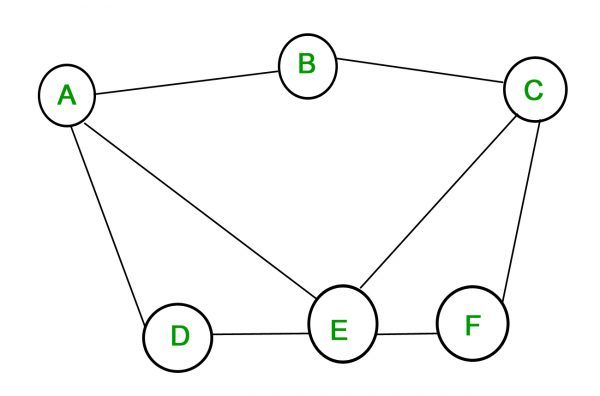

Graph theory may be one of the most widely applicable topics I've seen in mathematics. It's used in chemistry, coding theory, operations research, electrical and network engineering, and so many other places. The subject is mainly credited to have begun with the famous Seven Bridges of Königsbergproblem posed by Leonard Euler in 1736. Frank Harary should also be credited with his massive work in bringing applications of graph theory to the sciences and engineering with his famous textbook written in 1969.
My own researchforced me to stumble into this area once my research partner, Jason Hathcock, suggested we explore the idea of viewing dependency relations in the sequences of variables we were studying as digraphs. Since then, I've been buried in graph theory texts, finding a wealth of fascinating topics to explore.
Here, we're going to look at a technique to find all maximally independent sets in a graph.
Of the many applications that arise, one in particular is in coding theory. We want to find the largest error correcting codes we can, particularly in internet transmissions that can lose packets. A paper discussing this can be found here. (paywall warning). We've discussed some basics of coding theory on this site as well. Finding error correcting codes with desirable properties is equivalent to solving the problem of finding maximal independent sets. The purpose of this article isn't to discuss the applications here, but I've learned long ago that no one will keep reading unless I mention at least one application.
Finding a maximal independent set is relatively simple. Start with any vertex $v \in V(G)$. Add another vertex $u$ that is not adjacent to $v$. Continue adding vertices that are not adjacent to any already in the set. For a finite graph, this process will terminate and the result will be a maximally independent set.
Will it be one of largest cardinality? Not necessarily.
For example, using one more of our dependency graphs generated by $\alpha(n) = \sqrt{n}$, we can take the order to be 24 as shown, and build a maximal independent set starting with vertex 3. Note that none of vertices 9-15 or 1 can be in the set, since they're all adjacent to vertex 3. Vertex 2 is not adjacent to vertex 3, so we add it into our set: $V = \{2,3\}$. Now, the next vertex we add can't be adjacent to either 2 or 3, so that rules out 1, 9-15, and 4-8. Grab vertex 16. Now $V = \{2,3,16\}$. Notice that none of the remaining vertices are adjacent to any of the previous vertices. Continuing this process, we'll get that $V = \{2,3,16,17,18,19,20,21,22,23,24\}$. Notice that if we add any other vertices to this set, they'll be adjacent to something already in it.
We're rarely interested in just finding one maximal independent set. We'd prefer to find them all, and doing it by inspection is not very palatable. The heart of the article is an admittedly not optimal but still interesting way to find all maximal independent sets for reasonably small graphs.
First, we'll assign a Boolean variable to each vertex according to its inclusion in a maximal independent set. For example $A = 1$ implies $A$ is in the maximal independent set. Recall from Boolean algebra that
$$x+y = \left\{\begin{array}{lr}1, & x = 1 \text{ or } y = 1 \text{ or } (x=y=1)\\0,&x=0 \text{ and } y=0\end{array}\right.$$ Remark: $x+y$ is just another way of writing a union. This isn't addition mod 2 here. $$ xy=\left\{\begin{array}{lr}1, & x = 1 =y\\0,&\text{ otherwise}\end{array}\right.$$ What we've done here is set up inclusion into our maximal independent sets in a Boolean fashion. So $x+y = 1$ corresponds to the inclusion of either vertex $x$ OR vertex $y$ OR both vertices $x$ and $y$. Similarly, $xy = 1$ corresponds to the inclusion of both vertices $x$ and $y$.Now, we can express an edge of a graph as a Boolean product $xy$, where $x$ and $y$ are the vertices at either end of the edge.
Finally, set up the sum of all edges and call it $\phi$:
$$\phi = \sum xy \text{ for all } (x,y) \in G$$ For our graph above, $$\phi = AB + AD + AE + BC + CE + CF + DE + EF $$For a vertex to be in an independent set, it can't be adjacent to any other vertices in the set. Put another way, for each edge, we can only have at most one of the vertices that make it up. If we include $A$ in the independent set $V$, then $B$cannot be in there.
Returning to our $\phi$, note that its value under Boolean algebra can only be 0 or 1. If $\phi = 1$, then at least one edge has both of its vertices "on". This means, only combinations of $A, B, C, D, E, F$ that yield $\phi = 0$ will give us a maximally independent set.
Our goal now is to find all combinations of our Boolean vertex variables that yield $\phi = 0$. As it turns out, solving this directly is pretty annoying. I spent an inordinate amount of time trying to do it this way just to see if it could be done this way. If we want $\phi = 0$, that's logically equivalent to seeking $\phi^{c} = 1$, where $\phi^{c}$ is the Boolean complement (or negation) of $\phi$.
Recall from Boolean algebra the following: (These may not be the symbols you're accustomed to. Just replaces with union and intersection and verify for yourself.)
$$\begin{aligned}(xy)^{c}&=x^{c}+y^{c}\\(x+y)^{c} &= x^{c}y^{c}\end{aligned}$$ So, if we take $\phi^{c}$ for our graph above, $$\begin{aligned}\phi^{c}&=(A^{c}+B^{c})(A^{c}+D^{c})(A^{c}+E^{c})(B^{c}+C^{c})(C^{c}+E^{c})\\&\quad(C^{c}+F^{c})(D^{c}+E^{c})(E^{c}+F^{c})\end{aligned}$$What does the negation here actually mean? By taking the complement, instead of finding vertices to include, now we're finding vertices toexclude.When we multiply this expression out, we'll get a sum of terms, where each term is a product of complements of our original Boolean variables. To get $\phi^{c} = 1$, all we need is one of those terms to be 1. To get a term to be 1, all members of the product must themselves be 1, meaning each term gives us a set of variables toexclude. Excluding these variables gives us one maximally independent set for each term, so this gives us all the maximally independent sets.
The nice thing about dealing with Boolean arithmetic is that we can program a computer to do this for us.
I happened to find this interesting, and ended up obsessed with it for a day. I tried several different ways of solving this beyond the one given. I tried using the direct equation $\phi$, and tried using regular arithmetic on just $\{0,1\}$, setting up a sort-of structure function similar to the reliability block diagrams detailed here.
I always hesitate to blame the method, and rather my own arithmetic errors, but I didn't have much luck with the structure-function method, though I may try again to see if it's an equivalent method. I believe it should be.
Looking at $\phi^{c}$ makes more sense after playing with this problem for some hours. The sum/union is quite nice, because it neatly separates out the various sets to exclude. It's a better exploitation of Boolean algebra than trying to work with $\phi$ but aiming for a sum of 0. I still think it should be possible to work with it directly, even if not advisable. If I decide to torture myself with it further, and end up with something to write about, perhaps I'll append here.
I always end up ending my articles with some takeaway. I don't have much of one here, except it was a curiosity worth sharing. Perhaps a decent takeaway is to reveal a bit of the tedium and dead-ends mathematicians can run into when exploring something. That's just part of research and understanding. It's entirely possible to spend hours, days, weeks on something and all you conclude is that the original method you saw is definitely superior than the one you were trying to develop.